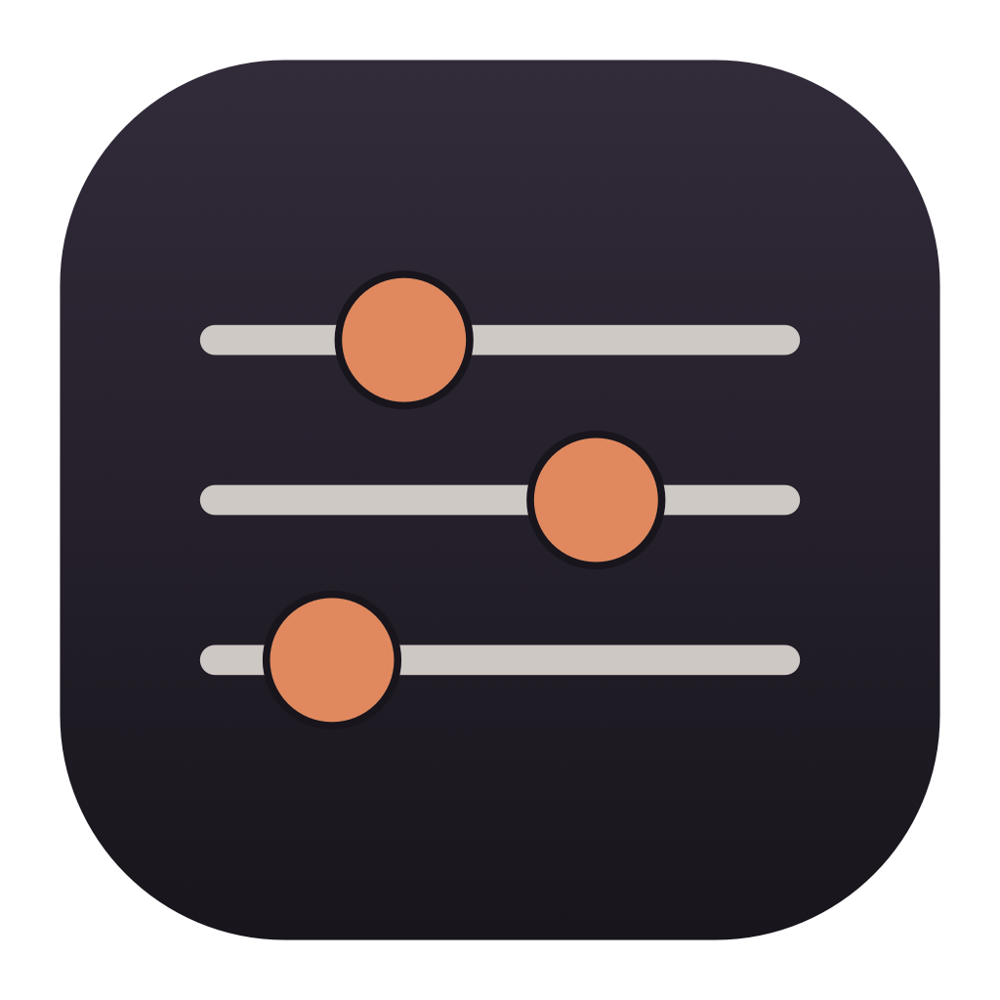
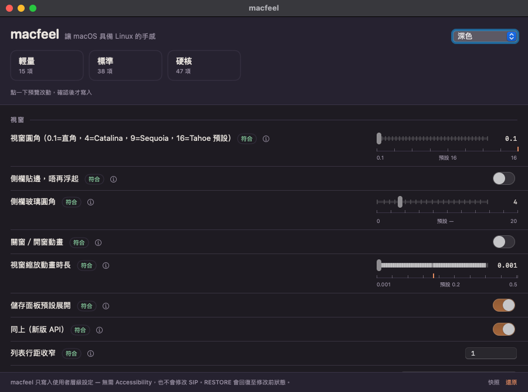

macfeel · macOS utility
讓 macOS 具備 Linux 的手感
把視窗動畫、Dock、Finder、鍵盤重複速度一次調到順手。每一個改動都寫明它在改哪個
defaults 鍵，套用前先看完整清單，任何時候都可以還原。

它會改什麼
- 速度 — 關窗／開窗動畫、視窗縮放、Dock 出現時間、Mission Control 動畫。
- Dock — 自動隱藏、即時彈出、用 scale 代替 genie、隱藏最近使用。
- Finder — 顯示副檔名、路徑列、狀態列、完整路徑、資料夾排先、唔寫 .DS_Store。
- 鍵盤 — 按鍵重複速度、關長按彈字、關智能引號與自動修正。
- 截圖 — PNG、固定資料夾、無陰影、無縮圖。
- 觸控板與滑鼠 — 關自然捲動、關滑鼠加速、輕點即按。
三個累積組合：輕量 15 項、標準 38 項、硬核 47 項。不需要「輔助使用」權限，也不修改 SIP。
安裝
Mac App Store 版本（沙盒）與 GitHub 版本（完整功能）共用同一份設定表。原始碼與命令行版本：
git clone https://github.com/Kinfxhk/macfeel.git cd macfeel/app && ./build.sh --run
還原
每次套用前會自動建立快照（~/Library/Application Support/macfeel/snapshots/）。
按「還原」回到最近一次快照，或用「還原此項」刪除單一鍵值。